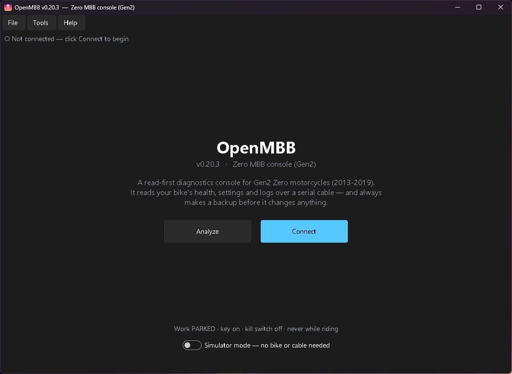
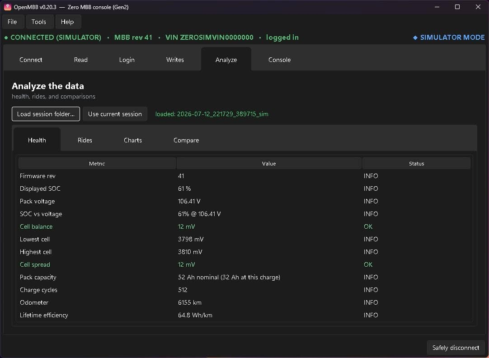
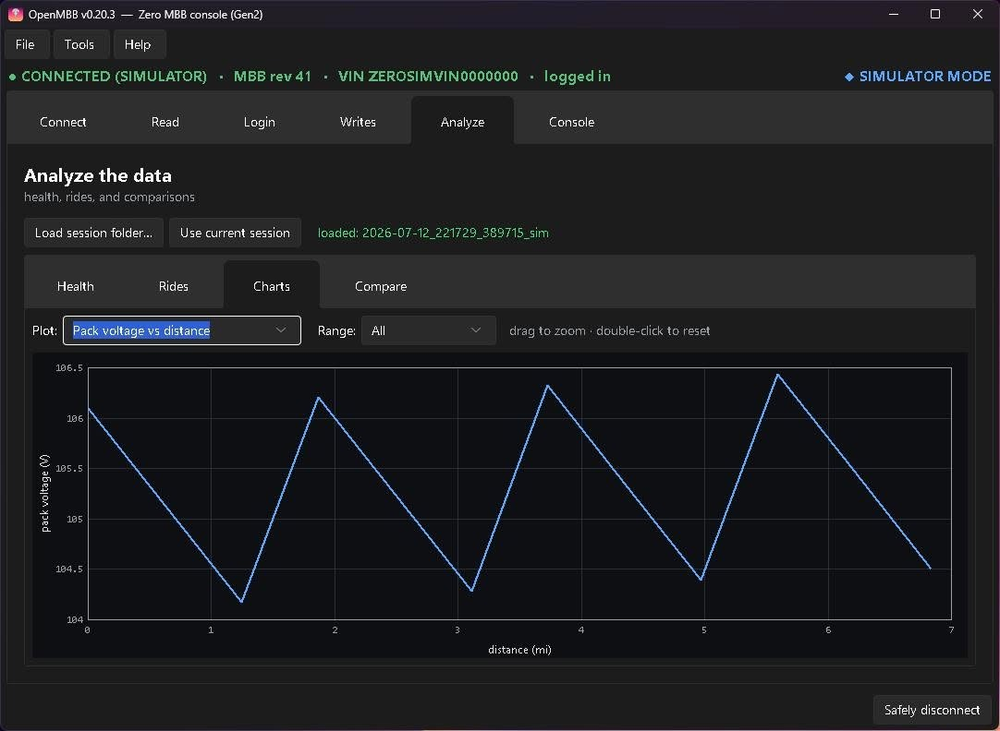
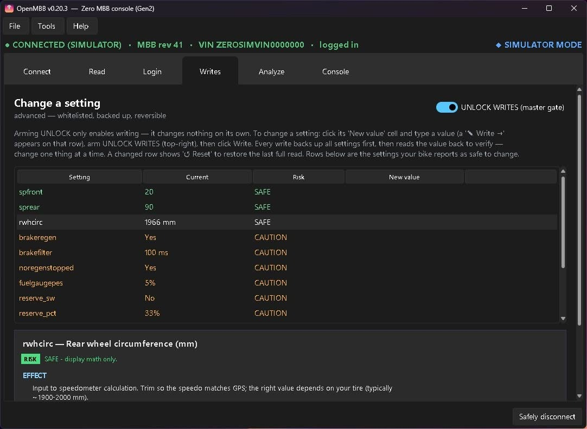
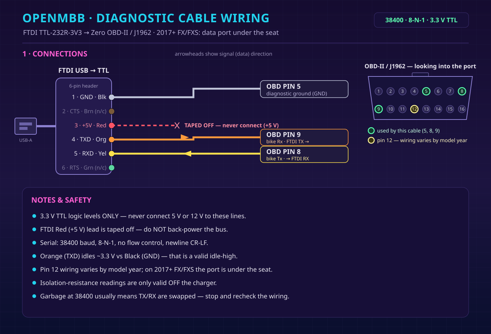

OpenMBB: Open-Source Diagnostics for Zero Electric Motorcycles
A free desktop app that reads a Gen2 Zero's own diagnostics over the service port — battery health, error logs, and ride analysis, with a built-in simulator.
Project Overview:
My 2017 Zero FXS will tell you almost everything about itself — battery management data, motor controller state, a complete error log — but the conversation happens over a service-port console that normally only dealer tools speak. The official Bluetooth app kept letting me down when what I wanted to know was how my battery was actually aging, so I decided the bike and I should talk directly. OpenMBB is the result: a free, open-source desktop app that connects to the bike's MBB (Main Bike Board) console, reads everything it will share, backs it up, and makes sense of it offline.
What It Does:
- Reads the bike's own diagnostics — identity, BMS and battery state, motor controller, lifetime stats, and the full error log — and saves clean backups of all of it.
- Battery health analysis — cell voltages and balance, pack isolation, charge cycles, and capacity trends built from the bike's own data, so "how's the pack doing?" gets a real answer instead of a guess.
- Ride and gearing analysis — your ride history decoded from the bike's own event log, plus charts and sprocket math helpers.
- A built-in simulator — the entire app works with no bike connected, so you can explore every screen before you ever plug in.
- Windows and Linux builds — a Windows installer, portable single-file binaries for both platforms, and source for anywhere Python runs. Continuous integration builds and verifies every release.




Safe by Design:
Tools that can write to a vehicle's brain deserve suspicion, so OpenMBB is read-first on purpose. Writing is off by default and limited to a whitelist; the Writes tab doubles as a reference of what's adjustable (sprocket/speedo trim, custom-mode speed, torque, and regen) — each setting shown with its effect and its risk — and any change is gated behind console login, a master unlock, and a per-write confirmation. It's an unofficial hobby tool, not affiliated with Zero Motorcycles, verified on my own 2017 FXS; other Gen2-era Zeros (roughly 2013–2019 S, SR, DS, DSR, FX, and the FXE) share the same console but are untested — so reads are the point, and writes are at your own risk.
The Hardware Side:
The whole interface is one inexpensive FTDI TTL-serial cable wired to the bike's OBD-II port — three pins and a ground. The app ships with the full wiring diagram, pinout, and the safety notes that matter (3.3 V logic only, never back-power the bus).

Get It:
OpenMBB is free and open source under the MIT license. The code, documentation, and ready-to-run downloads for Windows and Linux are all on GitHub.